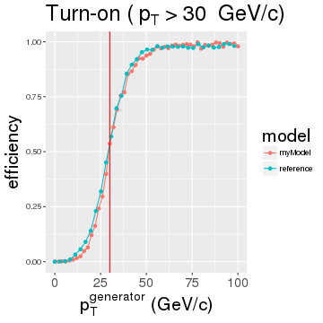

New input data
- numbers and shapes
Metrics
- turn-ons
- ROC curves and importance of true rate assumption
- rate-efficiency plots
Assessing the true rate
- matrix method
- input data
- example with the model built using all predictors
- instability of the method
- solution: rate parametrization
EMTF $p_T$ Regression
Khristian Kotov
Outline
New Monte Carlo simulation data
- Andrew's /store/user/abrinke1/EMTF/MC/SingleMu_Pt1To1000_FlatRandomOneOverPt
- a double muon sample, flat in \(0 < |\eta| < 2.5\) (barrel included)
- about 300\(k\) muons in endcaps extending to \(p_T = 1000~GeV\), flat in \(log(p_T)\)
Turn-on curve
Turn-on is nothing else but a decision boundary, smeared due to a finite resolution
It is a proportion of events surpassing a given decision threshold in every bin of true pT

Examples of turn-ons
For the current system the turn-ons for several thresholds look as follows:

ROC curve
Convolute turn-on (efficiency) with rate and see % of under-the-threshold (false positives) and % of over-the-threshold (true positives) rate accepted for a given threshold
To construct the ROC scan over the threshold and plot false positive vs. true positive rates

ROC curves for different rates
Rate assumption has a dramatic effect on how the same performance looks in our system:

True rate assessment
The true rate can be measured right from the data with the current system
The measured rate is a convolution of the unknown true rate and known turn-on:
\[ \left\{\begin{array}{lll} R_1 e^1_1 + R_2 e^1_2 + ... + R_N e^1_N = r_1 \\ ... \\ R_1 e^M_1 + R_2 e^M_2 + ... + R_N e^M_N = r_M \\ \end{array} \right., \text{where} \]
- \(R_i\) - true rate in bins of true pT
- \(e^j_i\) - turn-on efficiency in \(i^{th}\) bin of true pT for threshold \(j\)
- \(r_j\) - measured rate above threshold \(j\)
The solution in matrix form looks as follows: \(R = e^{-1} r\)
For a step-like turn-on \(e\) is an integrator and \(e^{-1}\) is a differentiator
Unfortunately, inverting the real turn-on matrix turned out to give a highly unstable \(R\)
Exchanging true rate for measured
There may by no high pT muons in MinBias sample \(\rightarrow\) tail is made of promoted muons
Measured rate is more relevant performance parameter than % of false positives
Efficiency right above threshold is a good estimate of % of true positives for vanishing spectra:

Efficiency-rate metric

New model's rate can be projected using current rate and turn-ons: \(r' = e' R = (e' e^{-1}) r\)
Input data for rate assessment
Use ntuples in /store/user/abrinke1/EMTF/Emulator/ntuples/ZeroBiasIsolatedBunch0
With no codebook or a reference to the ntuplizer I cannot make sense of the plots:
Why there are so many events with two seemingly identical tracks? I'll consider 1\(^{st}\) track only.
Building model with all predictors

New model does better (left plot), but the rate derived from matrix inversion is unstable
=======ROC curves for different rates
Rate assumption has a dramatic effect on how the same performance looks in our system:
Source of the instability
Let's take an ideal \(1/p_T^2\) rate shape and \(atan(\alpha(p_T^{true}-p_T^{thresh}+\delta))\) for smooth turn-on
Reconstructing true rate for different turn-on widths I see \(det(turnOn)\) vanishes

Linear system becomes digenerate when threshold's step approaches the turn-on width
=======True rate assesement
The true rate can be measured right from the data with the current system
The measured rate is a convolution of the unknown true rate and known turn-on:
\[ \left\{\begin{array}{lll} R_1 e^1_1 + R_2 e^1_2 + ... + R_N e^1_N = r_1 \\ ... \\ R_1 e^M_1 + R_2 e^M_2 + ... + R_N e^M_N = r_M \\ \end{array} \right., \text{where} \]
- \(R_i\) - true rate in bins of true pT
- \(e^j_i\) - turn-on efficiency in \(i^{th}\) bin of true pT for threshold \(j\)
- \(r_j\) - measured rate above threshold \(j\)
The solution in matrix form looks as follows: \(R = e^{-1} r\)
For a step-like turn-on \(e\) is an integrator and \(e^{-1}\) is a differentiator
Unfortunately, inverting the real turn-on matrix turned out to give a highly unstable \(R\)
>>>>>>> e3193fa9e0bc45057dd39b07f702aff19c5bfa9bParametrizing the rate shape
The above problem can be avoided if the rate shape is parameterized with just few handles
Now I am trying our different smooth shapes and numerical minimization of -log likelihood
To be continued ...
=======Exchanging true rate for measured
There may by no high pT muons in MinBias sample \(\rightarrow\) tail is made of promoted muons
Measured rate is more relevant performance parameter than % of false positives
Efficiency right above threshold is a good estimate of % of true positives for vanishing spectra:
Efficiency-rate metric
New model's rate can be projected using current rate and turn-ons: \(r' = e' R = (e' e^{-1}) r\)
Input data for rate assesement
Use ntuples in /store/user/abrinke1/EMTF/Emulator/ntuples/ZeroBiasIsolatedBunch0
With no codebook or a reference to the ntuplizer I cannot make sense of the plots:
Why there are so many events with two seemingly identical tracks? I'll consider 1\(^{st}\) track only.
Building model with all predictors
New model does better (left plot), but the rate derived from matrix inversion is unstable (right)